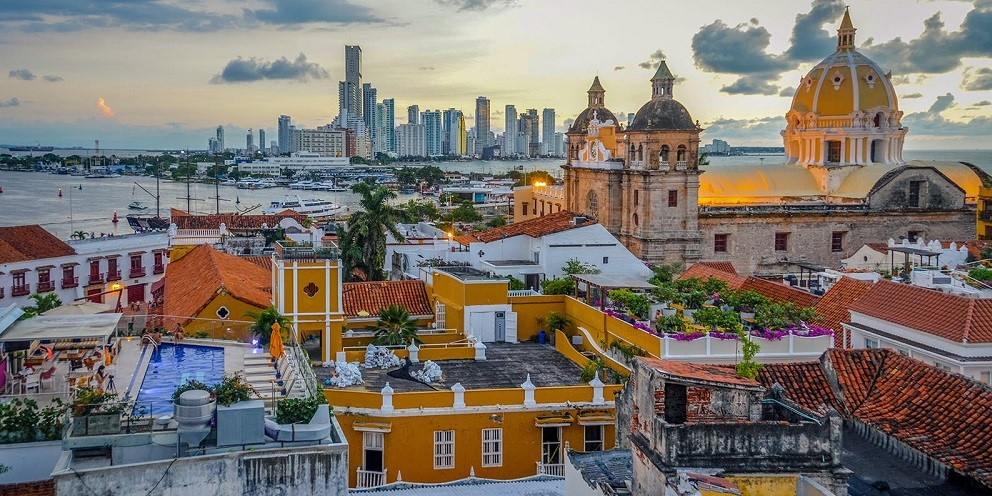

First minute cijena : 3.100,00 KM Redovna cijena: 3.300,00 KM
Period putovanja : 10.02.2022-24.02.2022.
U cijenu aranžmana uključen izlet - Obilazak Centralne Havane.
Let iz Beograda
Uputite se sa nama na ovo nevjerovatno i jedinstveno putovanje u zemlju kafe!
Nekada je Kolumbija bila poznata kao zemlja Pabla Escobara, a danas ova
zemlja privlači veliki broj turista željnih novog iskustva što zbog svog raznovrsnog
biodiverziteta, prelijepih plaža ili interesantnih gradova.
Program putovanja:
Dan 1
Okupljanje grupe na aerodromu “Nikola Tesla” u Beogradu. Let iz Beograda za Bogotu sa presijedanjem.
Dan 2
Dolazak u Bogotu u jutarnjim satima. Transfer do smještaja. Slobodno vrijeme za istraživanje treće najviše
prijestolnice na svijetu.
Dan 3
Dolazak u Bogotu u jutarnjim satima. Transfer do smještaja. Fakultativni izlet obilaska Bogote, španskog
kolonijalnog grada koji je prestonica Kolumbije. Ovaj grad je kombinacija moderne arhitekture i kolonijalne
zaostavštine Španaca, sa velikim trgovima i katedralama. Obići ćemo stari grad poznatiji pod imenom La
Candelaria, na čijem je trgu Chorro de Quevedo po predanju osnovana Bogota u XVI vijeku. Takođe
posjetit ćemo i Trg Bolivar, sa glavnom gradskom katedralom i nacionalnim parlamentom i Muzej Zlata, koji
posjeduje najveću kolekciju predmeta zlata iz pre-španskog perioda, potom i otići žičarom na brdo
Monserat, na 3.152m nadmorske visine, odakle se pruža najbolji pogled na Bogotu. Povratak u smještaj.
Dan 4
Let za Medellin, grad „vječnog proljeća“. Transfer do smještaja. Slobodno vrijeme.
Dan 5
Fakultativni izlet - obilazak Medellina, drugog najvećeg grada u Kolumbiji, koji je nekada bio poznat kao
grad Pabla Eskobara, a danas je urbano središte čitave zemlje. Istražujemo centar Medellina, pun historije
i raspjevanih nota tradicionalne guaska (guasca) muzike koju sviraju muzičari u parku Berio. Odlazimo do
trga Botero po kojem je Medellin postao poznat. Tu se nalaze čuvene figure pozantog likovnog umjetnika
Fernanda Botera. Posjett ićemo i Botaničku baštui muzej “Casa de la memoria”. Zatim žičarom idemo do
brda Santo Domingo odakle počinjemo takozvanu Graffiti turu, koja nas uči o borbi lokalnog stanovništva
za boljim životom. Povratak u smještaj.
Dan 6
Fakultativni izlet Guatape i El Penon. Nova prilika da se upoznamo sa prirodnim ljepotama Kolumbije,
obilazak jezera i čuvenu stijenu El Penon! Ova stijena se nalazi na ivici jezera i ako ste dovoljno hrabri
možete se preko 700 stepenica popeti na njen vrh i uživati u pogledu na dolinu...Takođe obilazimo i selo
Guatape koji nazivaju najšarenijim selom u Kolumbiji, sa puno šarenih kuća u kolonijalnom sitilu, uskim
uličicama i suvenirnicama. Povratak u Medellin.
Dan 7
Transfer do aerodroma. Let za Cartagena, najposjećeniji i najljepši grad u Kolumbiji. Slobodan dan u
Cartageni i mogućnost za potpuno opuštanje u najživopisnijem gradu južnoameričkog kontinenta.
Dan 8
Fakultativni izlet - obilazak Cartagene odnosno starog grada koji je pod zaštitom UNESCO-a. Stari grad je
najljepši biser kolonijalne arhitekture u Kolumbiji - kamene ulice i zgrade stare preko 300 godina u
najrazličitijim bojama. Naveče plešemo merenge, kolumbijski ples na nekim od trgova starog grada!
Dan 9
Fakultativni izlet – ostrva Rosario. Odlazak na Islas de Rosario. Još jedan dan za uživanje na karipskom
moru i prelijepim pješčanim plažama! Tirkizno more i bijeli pijesak pod našim prstima. U slobodno vrijeme
možete posjetiti Akvarijum ili iskoristiti ga za snorkling na arhipelagu koga čini 27 koralnih ostrva. Prilika za
opustanje uz masažu i svježe sokove i koktele.
Dan 10
Transfer do Santa Marte. Iz Santa Marte možemo otići na fakultativni izlet put Tagange. Taganga je malo
ribarsko mjesto na obalama Kariba. Pravimo predah od obilazaka i uživamo u kupanju u Karipskom moru.
Probamo svježu ribu u nekom od lokalnih restorana.
Dan 11
Fakultativni izlet u Nacionalni park Tajrona. Ovaj Nacionalni park je magična kombinacija bijelih plaža,
koralnih grebena i divlje džungle koju ukružuje najveći planinski vijenac uz obalu - Sierra Nevada de Santa
Marta. Pješačimo kroz prelijepu prirodu Kolumbije i odlazimo do plaže Kristal gdje imamo priliku da se
kupamo i uživamo u prelijepom moru. Povratak u Santa Martu.
Dan 12
Dan rezervisan za odmor i uživanje ili za fakultativni izlet u Taironaku gdje ćemo posjetiti i vodopad
Valensija. Prvo nas očekuje lakši hiking stazom okruženom florom i faune regiona, nakon kojeg dolazimo
do samog vodopada Valensija, gdje imamo priliku da se kupamo i uživamo u prirodi. Taironaka predstavlja
autentični prirodni raj koji se nalazi na obalama rijeke Don Diego i u podnožju Siera Nevade de Santa
Marte. Upoznat ćemo puteve i okruženje nekada velike Tairona civilizacije. Danas ovaj prirodni rezervat
oduševljava svoje posjetioce fascinantnim pejzažima i kristalno čistim vodama. Nakon vožnje karipskom
obalom putovanje nastavljamo sve do samo rezervata gdje ćemo biti počasćenim tradicionalnim
pataconesom i aguapanelom. Potom ćemo posjetiti stare prirodne terase i vidikovce ove zanimljive
prehispanske civilizacije. Nakon toga slijedi i relaksirajuće kupanje u Don Diego rijeci. Povratak u Santa
Martu.
Napuštanje smještaja. Let za Bogotu. Provodimo još jednu noć u glavnom gradu Kolumbije.
Napuštanje smještaja i transfer do aerodroma u Bogoti. Let za Beograd sa presijjedanjem.
Dolazak u Beograd u večernjim satima. Kraj putovanja

U CIJENU PROGRAMA UKLJUČENO:
Prijevoz:
-Avio kartu sa svim taksama na relaciji Beograd – Istanbul, u ekonomskoj klasi
-Avio karta sa svim taksama na relaciji Istanbul - Bogota, u ekonomskoj klasi
-Transfer od aerodroma do smještaja
-Transfer od smještaja do aerodroma
-Aviokarta sa svim taksama na relaciji Bogota - Medellin u ekonomskoj klasi, sa 23kg čekiranog i
7kg ručnog prtljaga
-Transfer od aerodroma do smještaja
-Transfer od smještaja do aerodroma
-Aviokarta sa svim taksama na relaciji Medellin – Cartagena u ekonomskoj klasi, sa 23kg čekiranog
i 7kg ručnog prtljaga
-Transfer od aerodroma do smještaja
-Transfer od Cartagene do Santa Marte
-Transfer od smještaja do aerodroma
-Aviokarta sa svim taksama na relaciji Santa Marta – Bogota u ekonomskoj klasi, sa 23kg
čekiranog i 7kg ručnog prtljaga
-Transfer od aerodroma do smještaja
-Transfer od smještaja do aerodroma
-Aviokarta sa svim taksama na relaciji Bogota - Istanbul, u ekonomskoj klasi
-Aviokartu sa svim taksama na relaciji Istanbul – Beograd, u ekonomskoj klasi
Smještaj:
Hotel u Bogoti Primjer 3 noći sa doručkom
Hotel u Medelinu Primjer 3 noći sa doručkom
Hotel u Cartageni Primjer 3 noći sa doručkom
Hotel u Santa Marti Primjer 3 noći sa doručkom
U CIJENU PROGRAMA NIJE UKLJUČENO:
-Međunarodno zdravstveno osiguranje (može se uzeti u agenciji)
-Individualne troškove nastale za vrijeme trajanja aranžmana
-Polica osiguranja od otkaza putovanja (može se uzeti u agenciji prilikom prijave)
-Fakultativne izlete i ulaznice za kulturno historijske spomenike
NAPOMENE U VEZI SA FAKULTATIVNIM IZLETIMA:
-Fakultativni izleti nisu obavezni dio putovanja.
-Termini i cijene fakultativnih izleta su promjenljivi i zavise od slobodnih termina po
lokalitetima, broja prijavljenih putnika i objektivnih okolnosti.
-Fakultativni izleti se realizuju od strane lokalnih agencija
-Fakultativne izlete vode lokalni vodiči na samim lokalitetima na engleskom jeziku. Uplatom
izleta putnik prihvata sve uslove lokalne agencije bez prava na žalbu.
-Agencija ne može uticati na dužinu trajanja putovanja do lokaliteta, vremena polaska,
povratka ili obilazaka kao ni stručnost lokalnih vodiča.
-Prilikom uplate fakultativnog izleta, putnik prihvata uslove lokalne agencije, organizatora
fakultativnog izleta, i dužan je da o uslovima obavijesti saputnike za koje uplaćuje izlet. Bilo
kakve naknadne izmjene, promjene i odustajanja od izleta nakon uplate, nisu moguća, niti je
moguće u bilo kojim okolnostima refundirati uplaćeni novac.
-Molimo sve putnike da se prije uplate fakultativnog izleta upoznaju sa predviđenim
itinererom i uslovima fakultativnog izleta.